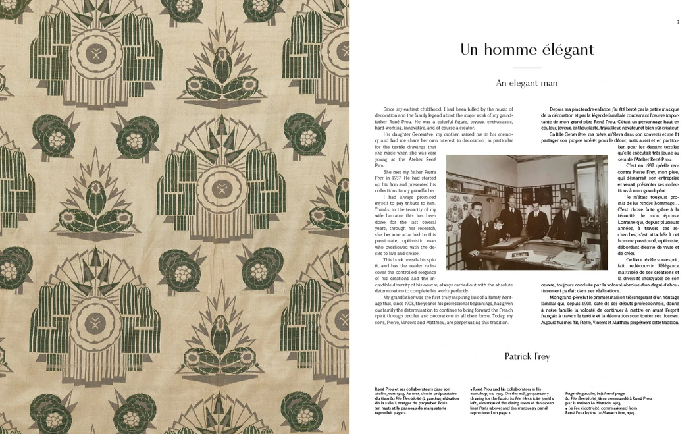
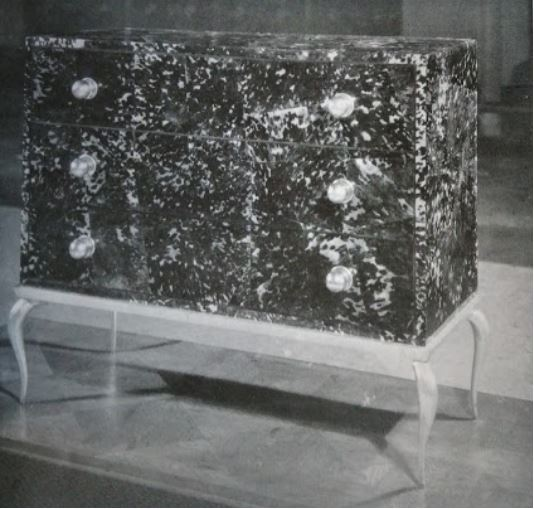
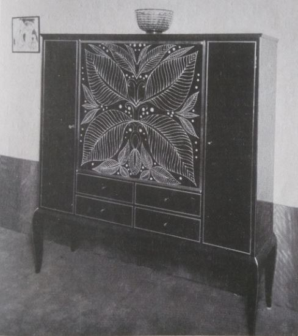
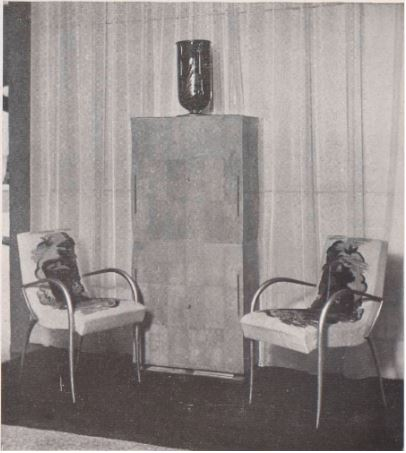
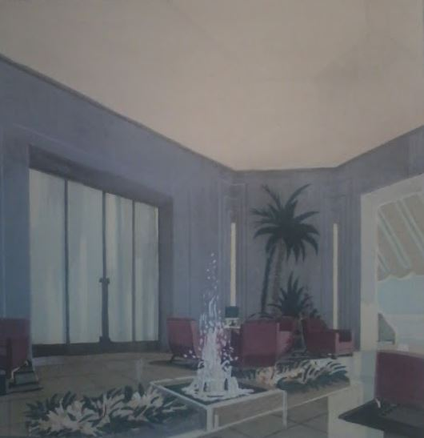

"La forme, la couleur !
Leurs conséquences en toutes choses sont primordiales.
Croyez-vous qu’une machine de guerre, un tank par exemple, doive être de forme oblongue et peint en rose et bleu ?"
PROU, René, Art-Techniques, Cours, Paris, éditions Art et Collection, v. 1940, p. 21.
When starting my research on René Prou's work (1887-1947), in 2015, in the context of writing the thesis for my Master of Research in History of Art, at the Sorbonne University, in Paris, under the supervision of M. Jeremie Cerman, I decided to contact Patrick Frey, René Prou's grandson, who runs the family-owned design company Pierre Frey, specialised in high-end upholstery, wallpaper and textiles.
To my great surprise, Lorraine Frey, Patrick Frey's spouse, had just started collaborating with Maité Hudry, founder of the famous Editions Norma (Paris), on the project of publishing a book on René Prou.
Mrs Frey was interested in using my research as material for the book, and that is how I seized this wonderful opportunity to be co-author of the book. In addition, I was in charge of writing the chronology of René Prou, which constitutes the second part of the book, the first part being written by Anne Bony, Art Historian specialized in 20th century Decorative Arts.
The book René Prou was published in 2017 in a bilingual French and English version. The launch party was organised at the Pierre Frey showroom, located near Palais Royal in the historical center of Paris.
You can read my thesis at the Sorbonne or on request by contacting me by email. The book is available on Norma's website, on Amazon and in Art book shops.
"La forme, la couleur !
Leurs conséquences en toutes choses sont primordiales.
Croyez-vous qu’une machine de guerre, un tank par exemple, doive être de forme oblongue et peint en rose et bleu ?"
PROU, René, Art-Techniques, Cours, Paris, éditions Art et Collection, v. 1940, p. 21.
When starting my research on René Prou's work (1887-1947), in 2015, in the context of writing the thesis for my Master of Research in History of Art, at the Sorbonne University, in Paris, under the supervision of M. Jeremie Cerman, I decided to contact Patrick Frey, René Prou's grandson, who runs the family-owned design company Pierre Frey, specialised in high-end upholstery, wallpaper and textiles.
To my great surprise, Lorraine Frey, Patrick Frey's spouse, had just started collaborating with Maité Hudry, founder of the famous Editions Norma (Paris), on the project of publishing a book on René Prou.
Mrs Frey was interested in using my research as material for the book, and that is how I seized this wonderful opportunity to be co-author of the book. In addition, I was in charge of writing the chronology of René Prou, which constitutes the second part of the book, the first part being written by Anne Bony, Art Historian specialized in 20th century Decorative Arts.
The book René Prou was published in 2017 in a bilingual French and English version. The launch party was organised at the Pierre Frey showroom, located near Palais Royal in the historical center of Paris.
You can read my thesis at the Sorbonne or on request by contacting me by email. The book is available on Norma's website, on Amazon and in Art book shops.

View inside the book

Anonyme, Le retour de la couleur, Vogue, mai 1935, p. 62 et p. 82

Anonyme, Art Actualité Expositions, Art et Industrie, mai 1934, p. 34

Anonyme, Au Salon d’Automne, Vogue, février 1934, p. 60

Henriot, Gabriel, Le XVIIIe Salon des Artistes Décorateurs au Grand Palais, Mobilier et Décoration, n°7, juin 1928, p. 26